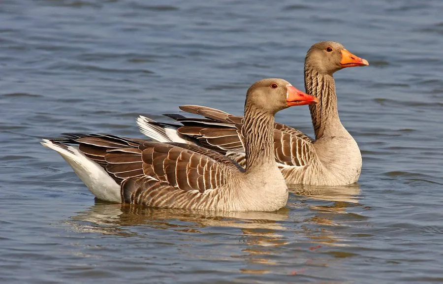

鸟类 · 动物界
灰雁 Anser anser

家鹅的祖先之一，体羽灰褐色、喙橙红色，飞行时翅膀灰色，常在湖泊和农田中成群觅食，是典型的候鸟。
- 分类
- 门脊索动物门纲鸟纲目雁形目科鸭科属雁属
- 栖息环境
- 湖泊、沼泽、河滩、草地与农田，繁殖期在芦苇丛中营巢
- 地理分布
- 欧亚大陆广泛分布，中国西北有繁殖，长江流域有越冬种群
- 保护级别
- IUCN 无危（LC）；中国国家二级保护动物
物种志
灰雁体长 76–89 cm，体重 2.5–4.4 kg。它的体羽以灰褐色为主，背部颜色较深，腹部较浅，喙和腿呈橙红色，眼睛周围有一圈白色；飞行时翅膀的灰色与身体形成柔和过渡。它的体形比白额雁大，颈部粗壮。
灰雁广泛分布于欧亚大陆，繁殖于欧洲北部、中亚和中国西北的湖泊、沼泽，冬季南迁到欧洲南部、非洲北部和亚洲南部，中国长江流域有越冬种群。它们以草本植物、谷物和水生植物为食，常在湖边草地和农田中成群觅食。灰雁是家鹅的主要祖先之一，人类驯化历史数千年；野生种群繁殖期在地面营巢，每窝产卵 4–6 枚，孵化 27–29 天。中国将其列为国家二级保护动物。
形态与习性
- 食性草本植物、谷物和水生植物
- 体长76–89 cm
- 体重2.5–4.4 kg
- 繁殖每窝 4–6 枚卵，孵化 27–29 天
- 驯化家鹅的主要祖先之一
- 寿命野外约 15–20 年
趣味知识
- 灰雁是家鹅的主要祖先之一，人类驯化它的历史已有数千年。
- 它的喙和腿呈橙红色，体羽灰褐色，是典型的雁类外形。
- 灰雁飞行时常排成整齐的“一”字或“人”字队形。